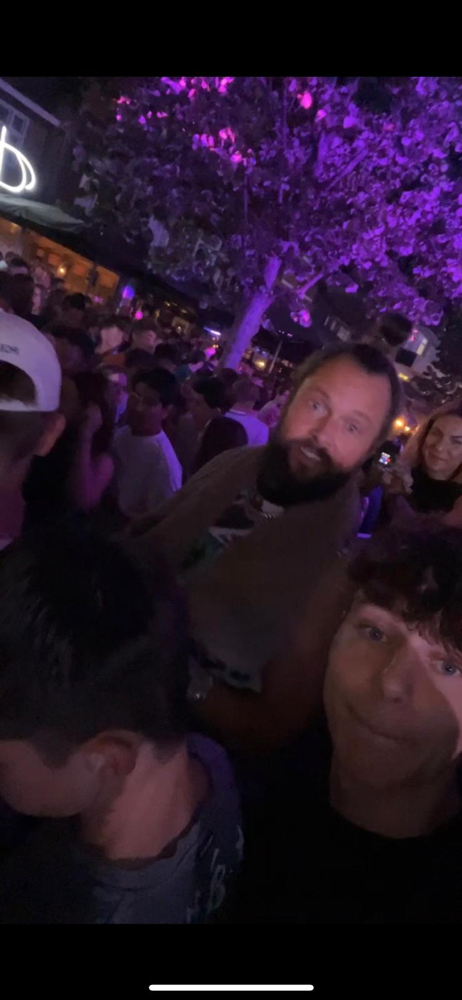
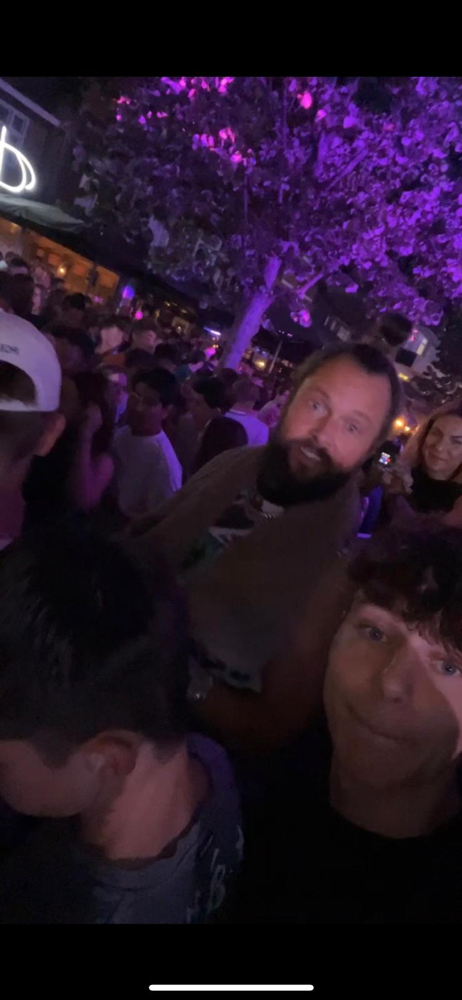

Over mij:
Hallo, ik ben Keno Hartogs, ik ben 17 jaar oud. Ik woon in maarheeze ik woon samen met mijn moeder, vader en zus. Ik heb ook huisdieren, de huisdieren die ik heb zijn drie honden en een kat. Ik zit op de school sintlucas in eindhoven strijp-s de opleiding die ik volg is software ontwikkeling. Ik zit nu in het tweede jaar van de opleiding. In totaal duurt het 4 jaar. Ik doe deze cursus in het Engels. In het onderwijs werk ik met java, html en css. Ook heb ik in unity met c# gewerkt, dit was in de eerste klas. Ik heb er wat spelletjes mee gemaakt, en het was een goede ervaring. Voor de spellen heb ik met 3D en 2D gewerkt, meestal met 3D.


 
